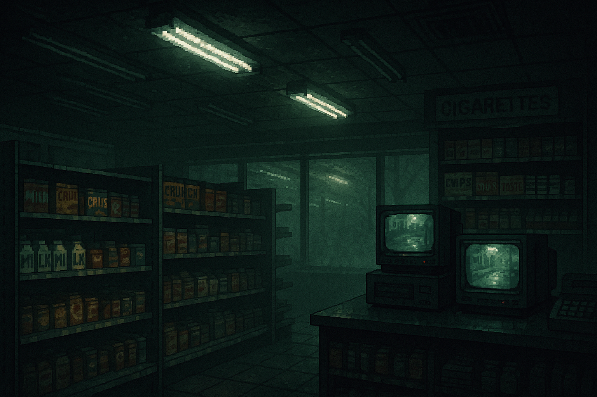

1位

Shift at Midnight
最大3人で楽しめるオンラインCo-opホラー。プレイヤーは1990年代の深夜ガソリンスタンドでアルバイトをする従業員を演じ、来店する客の中に紛れ込んだドッペルゲンガーを見抜きながら夜を乗り切る。ランダム生成されるシフトで毎回展開が変わるため、何度遊んでも新鮮。デモ版のレビューは「圧倒的に好評」を獲得しており、本日6月17日がついに正式リリース日となる超注目作だ。
おすすめ理由：本日6月17日リリースのホットな新作。デモ段階で99%好評の実績を持ち、フレンドと夜更かしして盛り上がれるCo-opホラーとして梅雨のお家時間に最適。